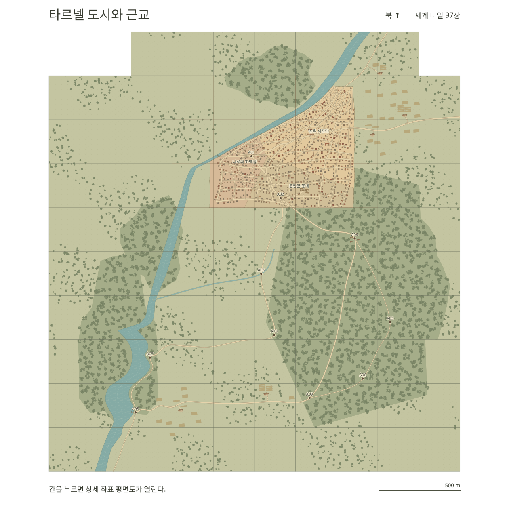

타르넬 도시와 근교
3,200명 · 정주지 47.71 ha · 세계 타일 97장


근교 면적과 몬스터 활동권
전체 도면에서 본류 수면 약 19.3 ha, 정주지 밖 숲 약 187.2 ha, 나머지 비정주 육지는 약 421.1 ha다. 기존 탐색도에 드는 비정주 육지 약 412.1 ha는 숲과 기타 육지에 걸쳐 있다. 강안과 숲 경계를 남북 4m 이하 간격으로 잘라 추산했다.
| 무리와 먹이터 | 활동 반경 | 추격 종료 |
|---|---|---|
| TG1 목재 회수조 | 140 m | 100 m 또는 공공 나루 경비선 |
| TG2 적토 운반·약탈조 | 150 m | 120 m · 저장굴 경계조 잔류 |
| TW1 얕은 어살 사냥 | 130 m | 40 m · 젖은 암반 |
| TW2 깊은 그늘 사냥 | 100 m | 40 m · 물가 |
| TS1 수액 포획망 | 170 m | 60 m · 포획망 |
| TC1 고사목 바닥 | 110 m | 25–40 m · 고사목 |
| TL1 샛개울 잔류물 | 90 m | 25–40 m · 물가 |
외곽 접속점과 좌표
동쪽 X · 북쪽 Y(m). 길은 중심선, 강은 서안과 동안의 접점을 따로 기록했다. 세계 좌표와 바깥쪽 단위 방향 벡터는 좌표 원본에서 확인한다.
| 길·강안 | 세계 타일 | 로컬 X, Y (m) | 길 폭 (m) |
|---|---|---|---|
| 서안 | -53_-80 | -611.2, -1877.2 | — |
| 서안 | -47_-71 | 1029.0, 852.2 | — |
| 동안 | -53_-80 | -544.9, -1877.2 | — |
| 동안 | -47_-71 | 1099.0, 852.2 | — |
| 테른 강 항로 | -53_-80 | -578.0, -1877.2 | — |
| 테른 강 항로 | -47_-71 | 1064.0, 852.2 | — |
| 시장 동문길 | -45_-72 | 1653.4, 323.1 | 7 |
| 상류 둑길 | -46_-71 | 1205.6, 852.2 | 5 |
| 하류 강변길 | -53_-80 | -498.3, -1877.2 | 4 |